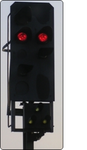
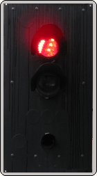

(1)
Bedeutung
Am Signal Hp 0 oder am gestörten Lichthauptsignal ohne schriftlichen Befehl vorbeifahren.
→
Signalbuch-Online
Informationen, Bedeutung und Beschreibung zum Ersatzsignal im Eisenbahnbetrieb.

